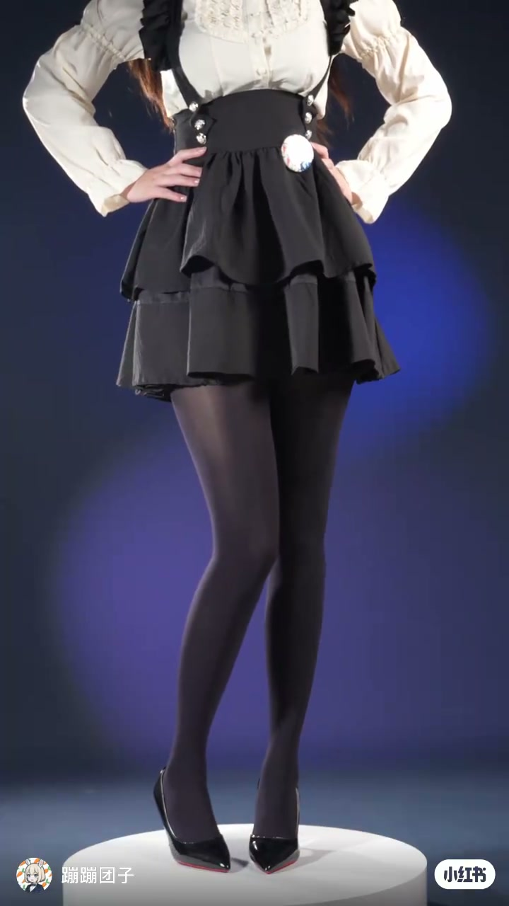
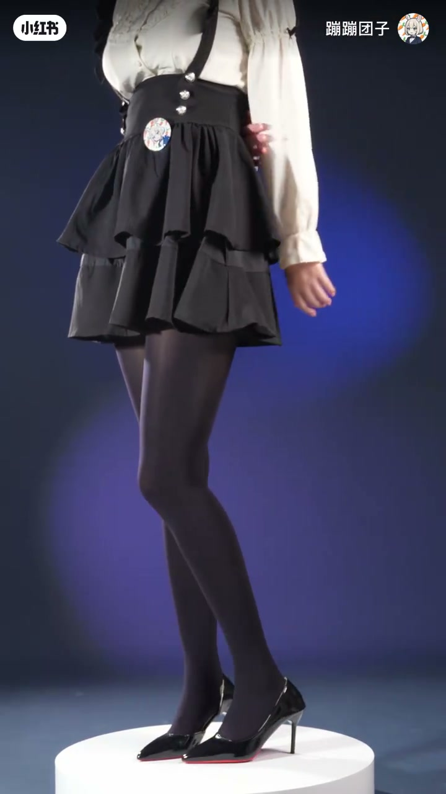
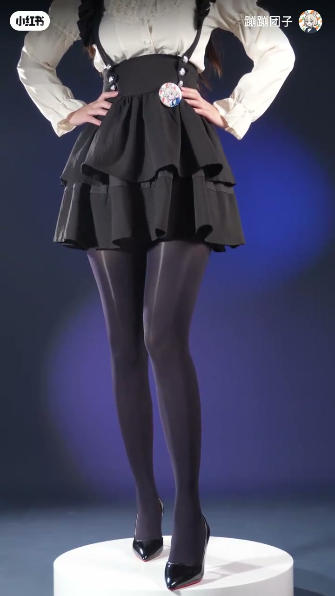
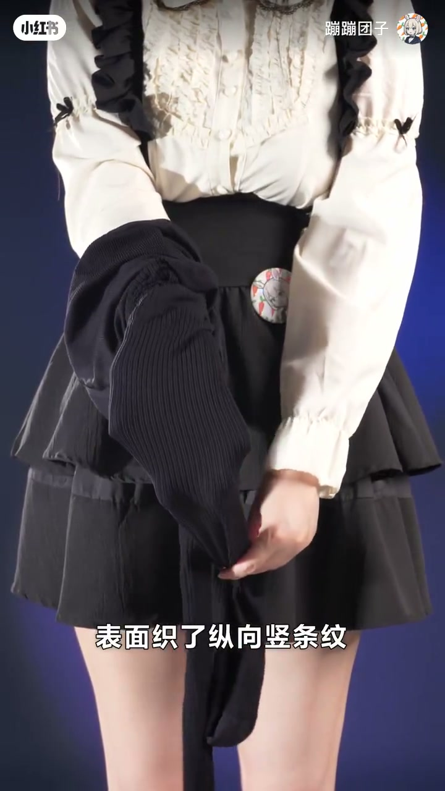
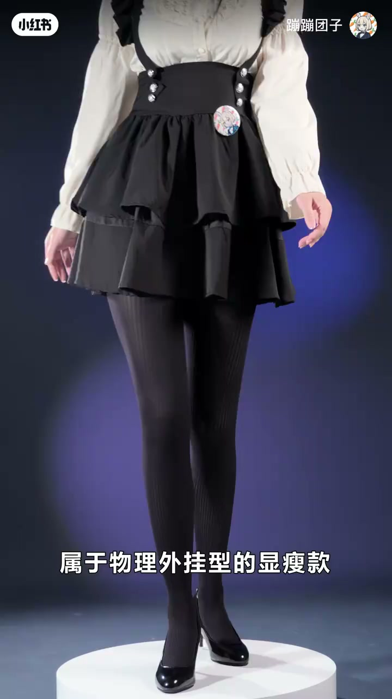
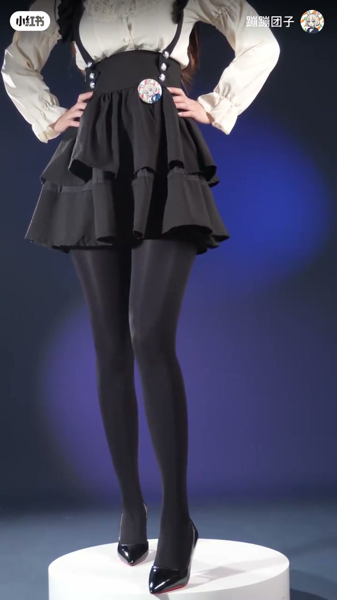
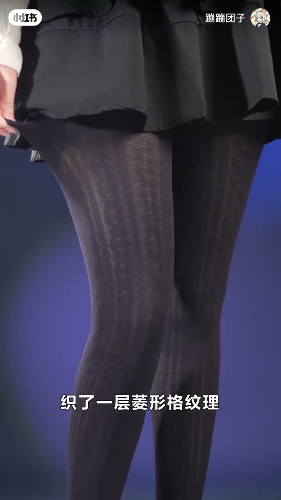
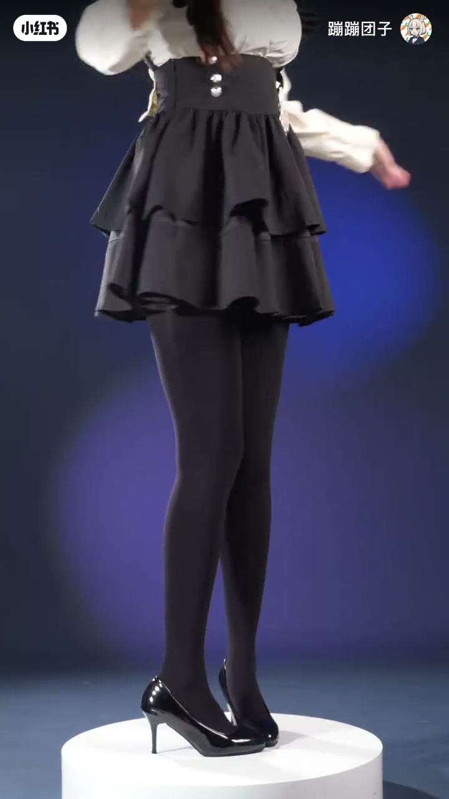

内容要点
蹦蹦团子用六种「厚黑」连裤袜对照讲解：60D 哑光天鹅绒（不透肉、微渐变、日常舒服）、油亮高反光、纵向竖条纹视觉拉长、水光膜感（春秋微保暖）、哑光底织菱形格（远黑近有细节）、以及带轻微塑腿压力的天鹅绒厚黑（保暖+塑形一袜两用）。
知识结构
哑光天鹅绒质感、不透肉；膝至大腿微撑开渐变，显瘦但不勒，日常舒服。
高反光亮面，光泽更强更直接；质感接近皮肤但更薄，光下更抛。
纵向织纹用视觉原理拉长显瘦；纹随皮肤拉伸不变形，偏「物理外挂」。
底色不透肉+表面水光，光线随腿弧流动如薄水膜；微保暖，适春秋。
哑光底上织菱形格：远看纯黑，近看有细节，避免平淡黑裤袜感。
哑光黑微保暖+轻微塑腿压力，腿显更紧致；一袜做保暖与塑形两件事。
「厚黑」不是一种袜子：按哑光/油亮/水光选光泽，按竖条纹/菱形格选视觉修饰，按有无压力选塑形；60D 天鹅绒偏日常，油亮偏舞台光感，水光偏春秋氛围。
00:00-00:31哑光天鹅绒日常款 vs 油亮抛光款
第一种：60D 天鹅绒厚黑袜。哑光天鹅绒质感、不透肉；上腿后膝盖到大腿会被撑开一点点，产生很微弱的渐变，穿上显瘦但不勒，属于日常穿很舒服的款。
第二种：油亮厚黑丝袜。高反光亮面，光泽更强更直接，像皮肤的质感但比皮肤薄，反光效果很明显；站在光底下腿更「抛」，偏光系效果。



00:32-01:07竖条纹拉长 vs 水光膜感
第三种：竖条纹厚黑。表面织了纵向竖条纹，利用视觉原理把腿拉长显瘦；条纹是织进去的，拉伸时跟着皮肤走、不会变形，穿上后腿看起来比实际长一点，属于物理外挂型的显瘦款。
第四种：水光厚黑袜。厚黑底色不透肉，表面有一层水光感，光线打上去会跟着腿的弧度流动，腿看起来像有一层薄薄的水膜；有一点点保暖效果，适合春秋季节。


01:07-01:41菱形格细节 vs 保暖塑腿两用
第五种：菱形格天鹅绒厚黑打底袜。天鹅绒哑光底色上织了一层菱形格纹理：远看是纯黑色，近看能看到花纹，穿上之后腿看起来有细节，不是那种平平无奇的黑裤袜。
第六种：天鹅绒厚黑袜。外层是天鹅绒哑光黑，有轻微保暖效果，同时带了一点塑腿压力，穿上之后腿看起来比实际紧致一些——相当于一条袜子做了保暖和塑腿两件事。



完整转录（46段）
以下文本由 Whisper medium 模型自动转录，可能存在少量识别误差，已尽可能修正。
这是什么厚黑?
这是60D天文绒厚黑袜
哑光天文绒剂感
不透亮
上腿之后膝盖到大腿那一块会被撑开一点点
产生很微弱的渐变
穿上显瘦淡布蕾
属于一常穿很舒服的款
这是什么厚黑?
这是油亮厚黑丝袜
高反光的亮面
光泽更强更直接
像皮肤的剂感但比皮肤薄
反光效果很明显
站在光底下腿更抛了光系的
这是什么厚黑?
这是束条纹厚黑
表面织了纵向束条纹
利用细节眼里把腿拉长显瘦
条纹是织进去的
拉伸的时候跟著皮肤走
不会变形
穿上之后腿看起来比实际长一点
属于物理外挂型的显瘦款
这是什么厚黑?
这是水光厚黑袜
厚黑底字不透亮
表面有一层水光感
光线打上去会跟著腿的弧度流动
腿看起来像有一层薄薄的水膜
有一点点保暖效果
适合春秋季节
这是什么厚黑?
这是零星纹年纪厚黑打底袜
年纪雅光底字上织了一层零星格纹里
眼看是纯黑色
近看能看到零星花纹
穿上之后腿看起来有细节
不是那种平平无奇的黑裤袜
这是什么厚黑?
这是年纪厚黑袜
外层是年纪雅光黑
有轻微的保暖效果
同时带了一点绣腿压力
穿上之后腿看起来比实际紧致一些
相当于一条袜子做了保暖和绣腿两件事